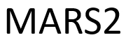

Paul Liang
MIT
Paul Liang
MIT

Multimodal Reasoning and Slow Thinking in the Large Model Era: Towards System 2 and Beyond
The MARS2 Workshop at ECCV 2026
Location: Malmö, Sweden
Time: September 8 - 9, 2026
In conjunction with ECCV 2026.
Relevance of Topic
OpenAI o1 and DeepSeek-R1 have opened up the era of large reasoning models (LRMs). Both the strong semantic intelligence of large language models (LLMs) and the long-chain reasoning ability of LRMs have brought new opportunities and challenges to the computer vision community. Now is the time to deeply connect the communities of CV, LLMs, and LRMs to discuss how to further develop CV research for complex tasks that need complex reasoning, towards System 2 and beyond.
Multimodal reasoning is essential for a wide range of applications. Traditionally, reasoning models were developed under a closed-set paradigm, assuming fixed data distributions, categorical labels, and predefined output formats. However, these models often struggle in real-world environments that are dynamic, vast, and physical.
To address this, modern LRMs have evolved to tackle open-world tasks through flexible, instruction-driven frameworks. This workshop aims to push the multimodal reasoning capabilities of large models beyond traditional fixed tasks and explore how models comprehend complex relationships, such as object interactions within a complex scene and zero-shot generalization, in a slow-thinking manner.
By addressing these challenges, we aim to bridge the gap between constrained, structured data and complex open-world reasoning, fostering more flexible and robust understanding in AI. The goal of this workshop is to bring together perspectives from multiple disciplines, including computer vision, multimodal learning, and large language/reasoning models, to highlight major open questions and identify collaboration opportunities.
Topics
We welcome research from both academia and industry on multimodal reasoning, slow thinking, open-world understanding, and robust evaluation. Topics include, but are not limited to:
- reasoning: multimodal reasoning, visual reasoning, spatial reasoning, long-chain inference, slow thinking.
- open-world tasks: dynamic real-world environments, physical scene understanding, zero-shot generalization.
- grounding: visual grounding, region evidence, object interactions, complex relationships, provenance, verification.
- models: LLMs, LRMs, VLMs, LMMs, agentic systems, neuro-symbolic and tool-augmented models.
- learning: instruction-driven reasoning, chain-of-thought, planning, reflection, self-correction, test-time reasoning.
- evaluation: benchmarks, challenge datasets, robustness, constrained data, structured data, open-world reasoning.
Invited Speakers
Paul Liang
MIT
Important Dates
- Submission deadline: August 1, 2026
- Acceptance notification: August 8, 2026
- Camera-ready deadline: August 12, 2026
Paper Submission
MARS2 2026 welcomes submissions on multimodal reasoning, slow thinking, open-world understanding, grounding, evaluation, and related large model systems. Submissions should be in PDF format and follow the ECCV/CVF workshop style; the final OpenReview instructions govern formatting and submission requirements.
- Submission start: June 1, 2026, 23:59 UTC
- Submission deadline: August 1, 2026, 23:59 UTC
- Notification: August 8, 2026
- Camera-ready: August 12, 2026
Program
| Time | Event | Presenter |
|---|---|---|
| 08:30-08:35 | Opening remarks | Kyoung Mu Lee |
| 08:35-09:10 | Invited talk and Q&A #1 | Paul Liang |
| 09:10-09:45 | Invited talk and Q&A #2 | Mihaela van der Schaar |
| 09:45-10:10 | Oral presentation | ≈ 5 papers |
| 10:10-10:30 | Poster presentation | ≈ 20 papers |
| 10:30-11:05 | Invited talk and Q&A #3 | Louis-Philippe Morency |
| 11:05-11:40 | Panel discussion | Academic and industrial experts |
| 11:40-12:00 | Competition awarding | Luc Van Gool (closing remarks) |
Competition
The workshop will host a MARS2 competition for multimodal reasoning and evidence-grounded evaluation. Registration, datasets, and leaderboard links will be released after the competition platform is finalized.
VG-RS
Visual Grounding in Real-world ScenariosEvaluating scene perception, object localization, and spatial reasoning.
VQA-SA
Visual Question Answering with Spatial AwarenessEvaluating spatial, commonsense, and counterfactual reasoning.
VR-Ads
Visual Reasoning in Creative Advertisement VideosEvaluating cognitive reasoning abilities in advertisement videos.
Awards will be distributed to top performers in each track.
Submission deadline. Acceptance notification and camera-ready dates follow the workshop schedule.
Registration, submissions, and leaderboard access will be handled through the EvalAI challenge page.